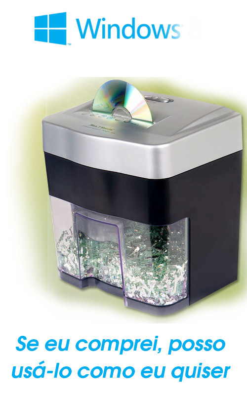
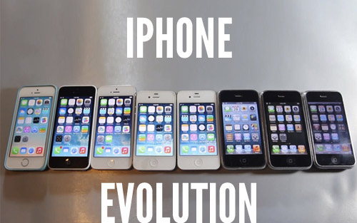

Seu navegador não suporta as funcionalidades requeridas pelo impress.js, você terá uma apresentação com uma versão mais simples.
For the best experience please use the latest Chrome, Safari or Firefox browser.
2014 nos mostra 30 anos de história do Software livre e mais de 20 anos da criação da primeira versão do Linux. Muita coisa aconteceu com o surgimento dessa revolucionária maneira de ver o mundo. Então apresento-vos 14 maneiras de conseguir sucesso com esta filosofia de vida e trabalho.
Sheldon Led
www.sheldonled.com
Uma questão de liberdade
"O que é que eu vou fazer com essa tal liberdade"
1 - Legalidade
2 - Economia
3 - Segurança
4 - Qualidade
5 - Desempenho
6 - Personalização
7 - Liberdade
8 - Flexibilidade
9 - Interoperabilidade
10 - Clareza
11 - Aprendizado
12 - Suporte Livre
Se o sistema é livre para uso e estudo, então qualquer pessoa pode ser capacitada para dar suporte
13 - Evolução
Não há necessidade de vender uma versão evoluída. Portanto a evolução é livre.
14 - Independência
Ganhar dinheiro com software livre
O Software Livre te ajuda a ganhar dinheiro direta ou indiretamente
Ganhar dinheiro com software livre
1 - Trabalhando em uma empresa que produz Software Livre
Ex: Linux Foundation, Mozilla, Google, Red Hat...
2 - Produzir seu sistema e vendê-lo
Software Livre não é necessariamente gratuito. Ele o é, em sua maioria porque vender Software Livre, de maneira crua, não é um bom modelo de negócio
3 - Produzir seu sistema, distribuí-lo gratuitamente e vender a implantação
Implantação de um sistema dentro de uma empresa é algo trabalhoso.
4 - Produzir seu sistema, distribuí-lo gratuitamente e vender treinamento
Ninguém gosta de ler manual ou documentação. É mais fácil pagar um curso
5 - Produzir seu sistema, distribuí-lo gratuitamente e vender suporte
Ser pago não por apertar o parafuso, mas saber qual parafuso apertar.
6 - Produzir seu sistema, distribuí-lo gratuitamente e vender customização
Ex: Colocar seu sistema no padrão de cores da empresa.
7 - Produzir seu sistema, distribuí-lo sob demanda
Ex: Licença sob demanda de uso -> Disco Virtual, Monitoramento
8 - Produzir seu sistema, distribuir uma versão gratuita e outra versão paga (com licença não livre)
9 - Adicionar funcionalidades extras a um sistema pré-existente
Ex: Fazer Linux funcionar em caixas eletrônicos
10 - Vender consultoria livre
OBS: Essa consultoria pode ser em TI ou administrativa
11 - Vender serviços
Ex: Serviços de Hospedagem, VPS, E-mail...
12 - Instalando e gerenciando redes
Ex: Utilizar Software Livres para configurar, por exemplo, o firewall de uma empresa
13 - Trabalhando com conteúdo
Ex: Usar Software Livre para gerenciar um blog, diagramação de revistas, jornais etc.
14 - Vender conhecimento
Ex: Vender cursos (empresa), dar aulas (professor)
Sheldon Led
www.sheldonled.com
sheldonled.ms@gmail.com
@sheldonled
2014 - 14 maneiras de ganhar dinheiro com Software Livre